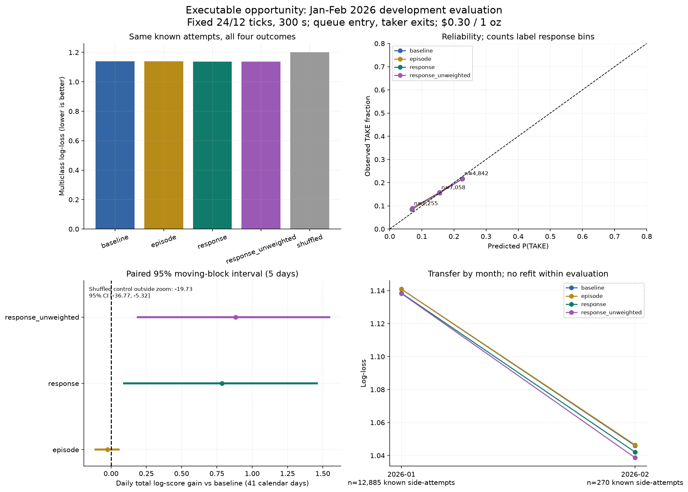
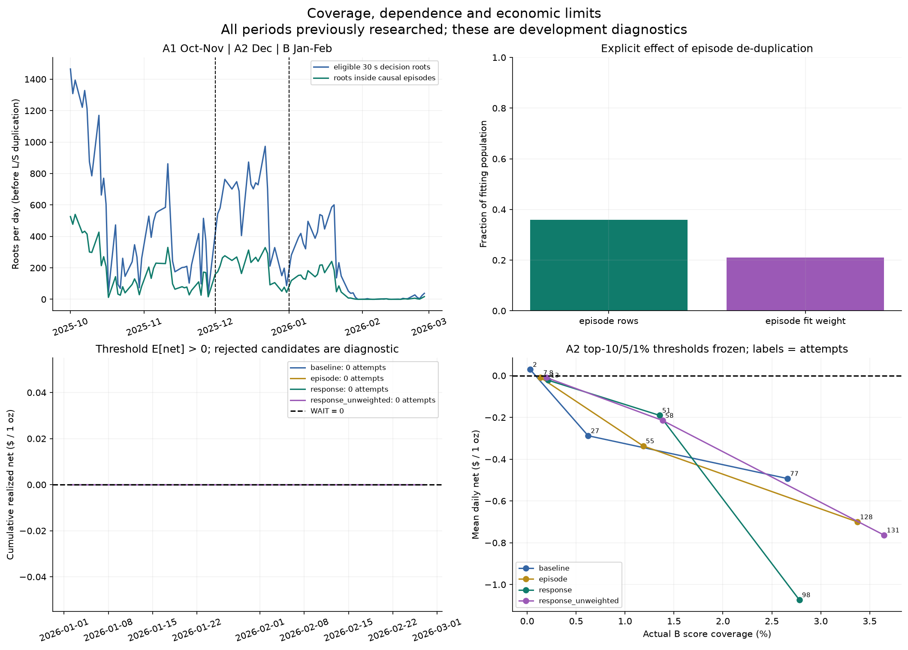
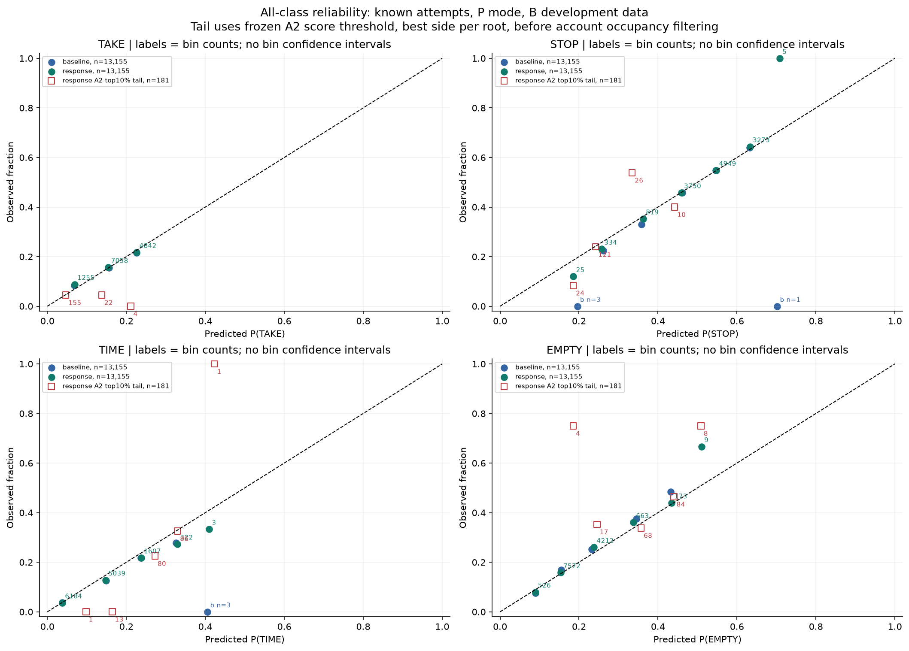
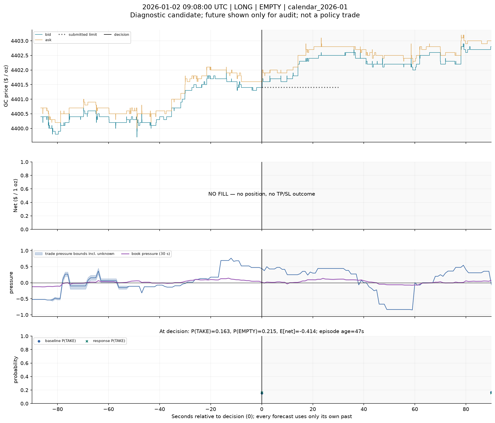
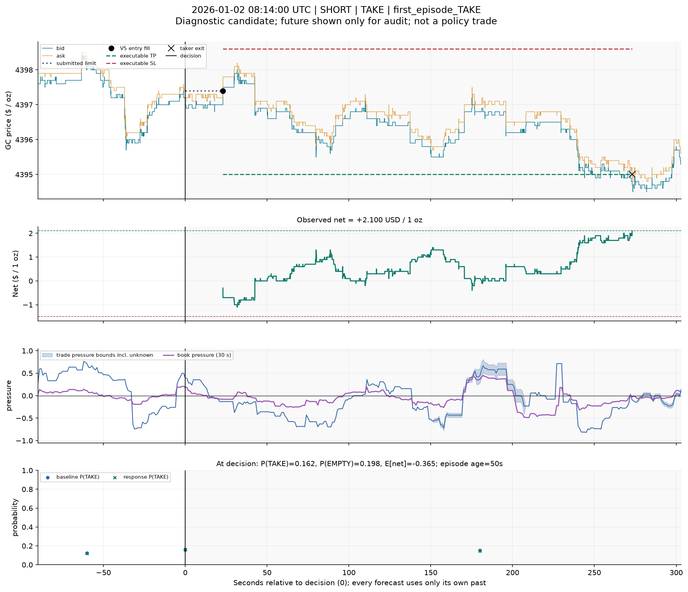
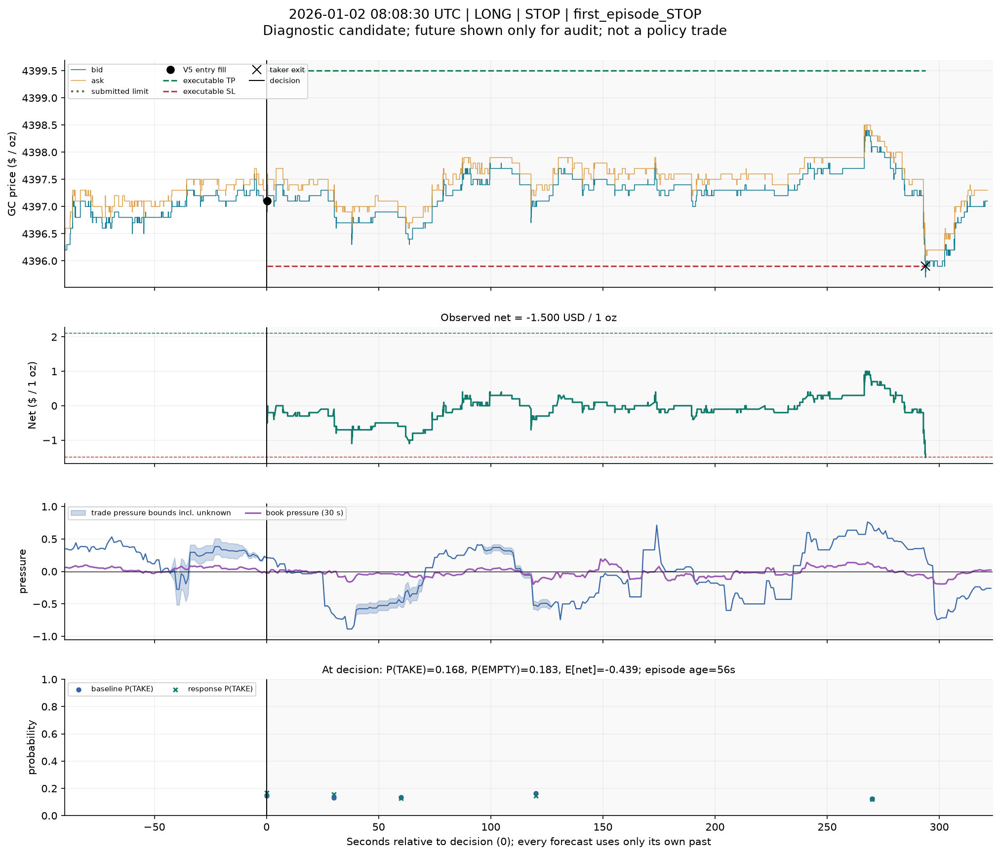
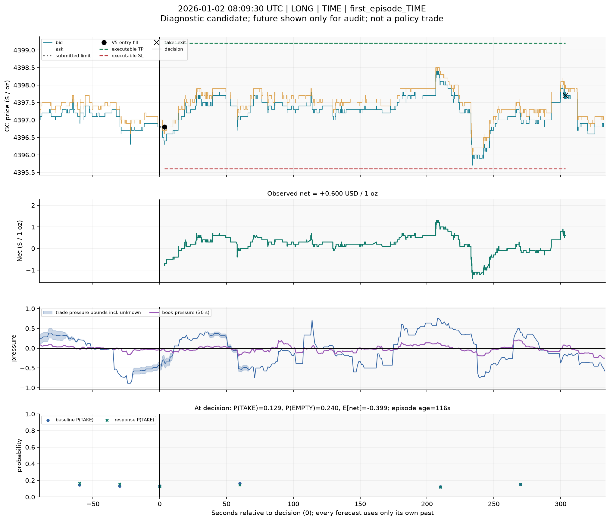
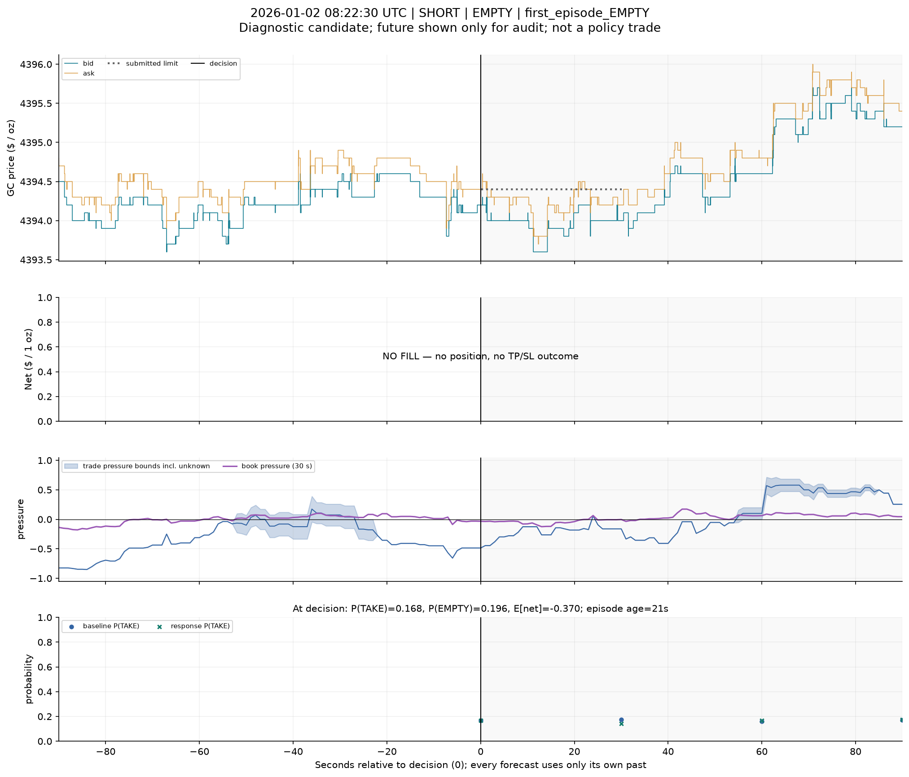
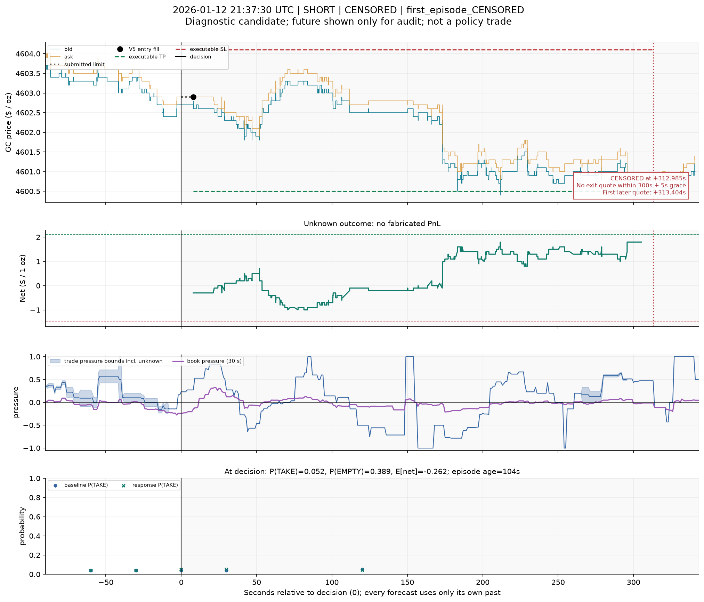
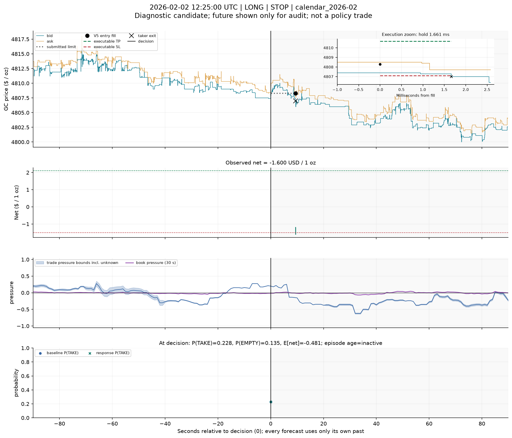

Development evidence. P: очередь на входе, тейкер на выходе. Графики будущего — только для аудита. Календарные и классовые сцены не являются выборкой прибыльных сделок.
Численный отчёт · Независимый визуальный аудит Sol 6.1









